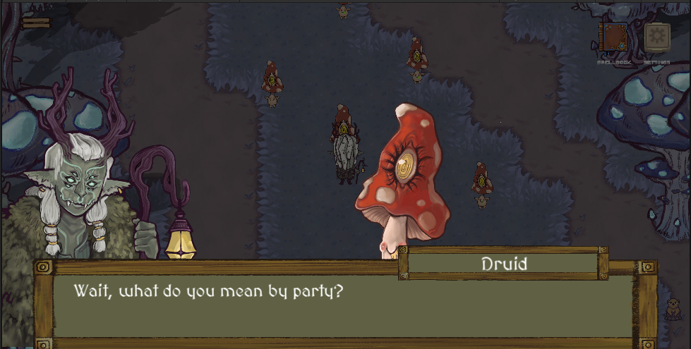
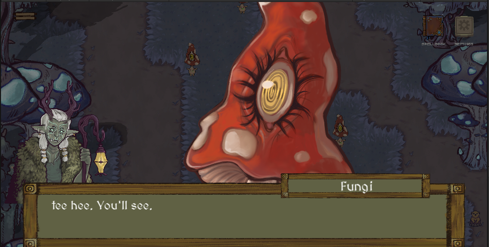

Sprint 2 Part 1 (3/3/24 to 3/10/24)
Due to spring break this blog post covers just one week.
Task 1: Fungi Minigame
The Forest area of Project Quest features a dancing minigame. The player must repeat after a mushroom's dance moves and
convince them to join their cause.
I fixed a bug where dialogue repeated too many times and adjusted the sprites' dancing speeds so players can better digest
the minigame's objective.
A more interesting part of the task was figuring out other ways to make the minigame immediately understandable. I felt that
the dialogue immediately preceding could use some changes:


If the fungi's last line was something like "repeat after me" or "I'll show you", the dialogue could carry the teaching.
I ran this by my programming lead and got the go ahead to change it since it was temp dialogue to begin with!
Task 2: Deer Collisions and Hitboxes
My other task was also relatively mundane, fixing a strange interaction where the player could walk over/inside NPC sprites
and making sure the player could interact with those NPC from believable angles. I took the initiative to spend some extra time
adjusting other sprites that weren't listed in the original task, if I came across collisions during playtesting.
While finishing up this task, I inadvertently found a critical softlock bug:
Spamming the interact key through this dialogue leads to the dialogue repeating itself as the player enters a battle scene,
and progression gets stuck after the battle. I looked into the bug a little bit, then reported it to the team and volunteered
to take it on next week.